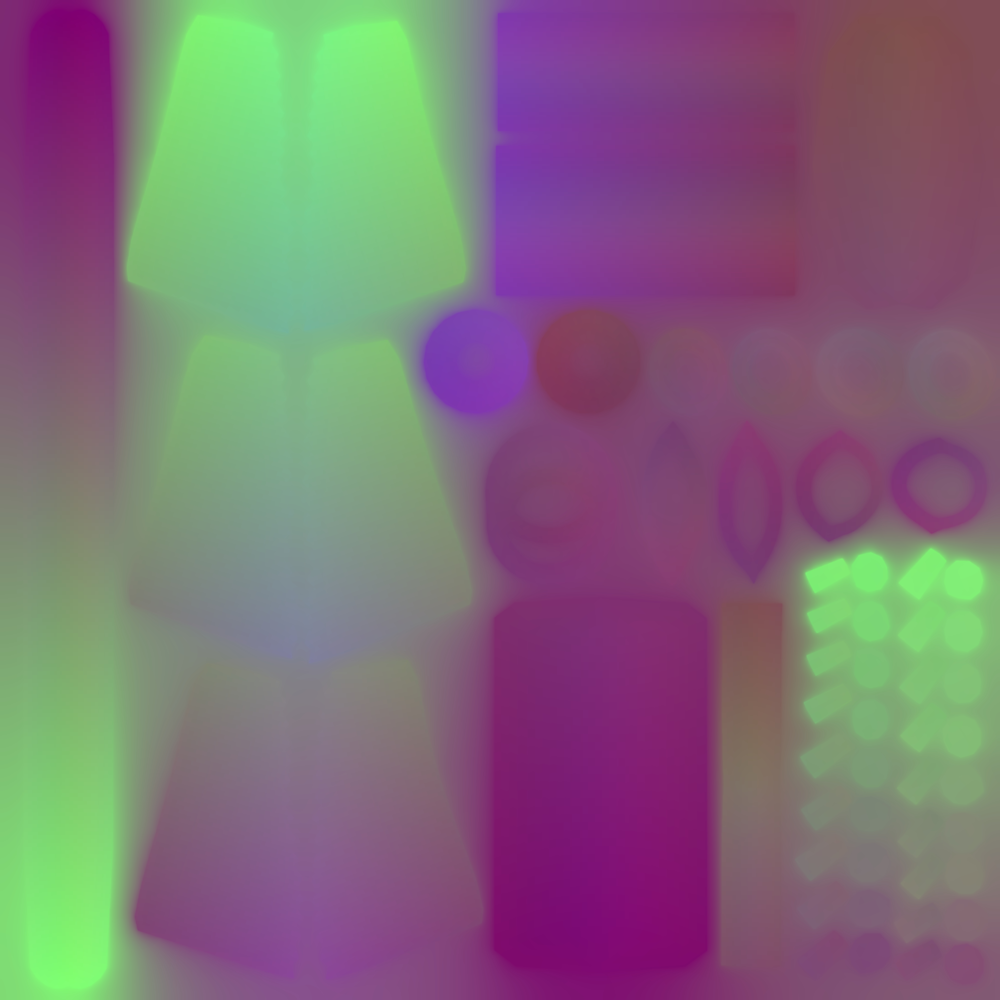
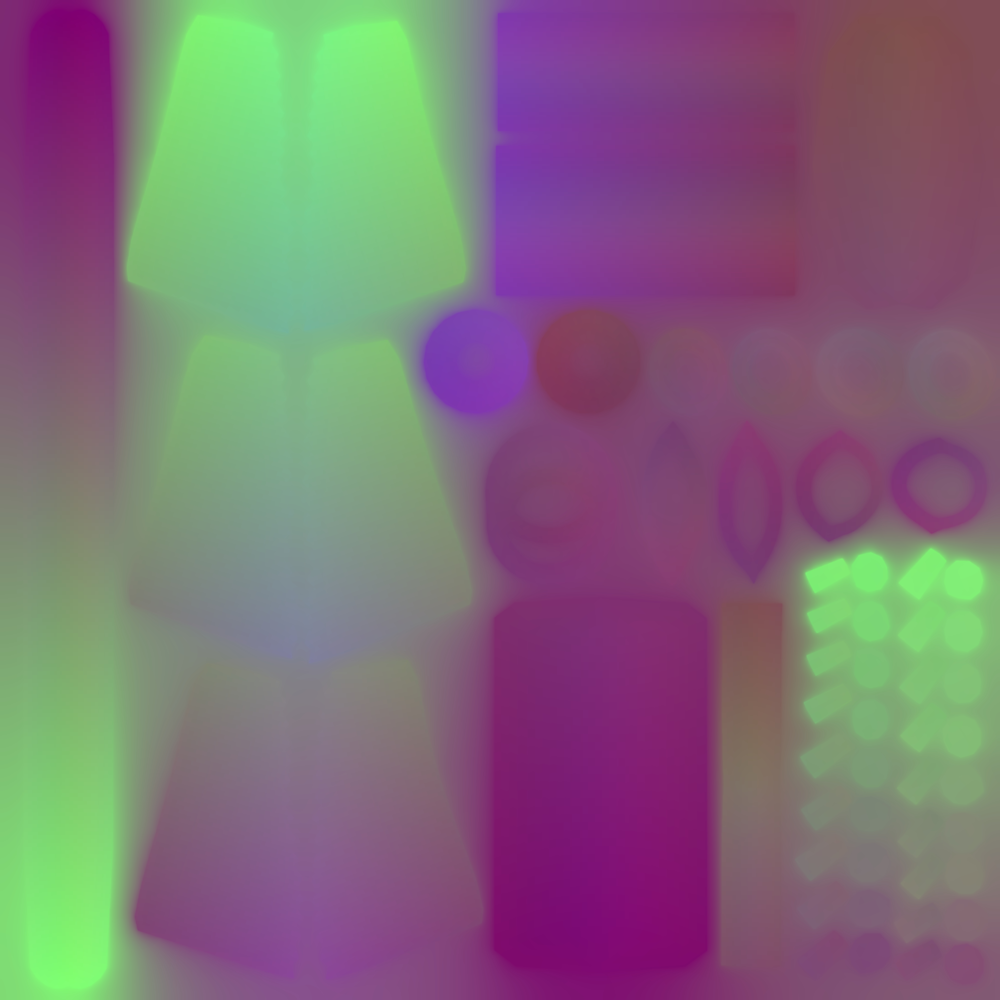

Constraints: Chose the prompt of working on a post-apocalyptic survival game and are tasked with creating a sword that was forged from scrap parts. The main protagonist built this sword by hand and it should have a gnarly look to it. So I started thinking of common workshop/garage elements.


This is my Reference I gathered before sculpting and texturing my sword to help get the overall realistic art direction I was aiming for. I went with this art style because the different elements that make up the sword seemed more interesting to emulate in a realistic fashion to me. I thought that the textures for this would be the most complicated to work on as they needed to look realistic.

I decided to model the base mesh using SubD modeling techniques in Maya. Most of this was very straightforward manipulation of basic boxes or cylinders. Although, I did get to play with the spiral tool for the rebar. This was a solid base to then take into ZBrush and start sculpting in more detail.
The sculpting in ZBrush mostly consisted of adding scratches and wear to the edges of the blades. Initially I was going to add rope detail in ZBrush, but since I was running into problems, I saved that task for Maya instead.


In Maya I added Rope detail around the cutlass area to the high poly for baking.

Since my base mesh closely resembled the high poly, I gave up on retopologizing the model and decided to adjust my base mesh to match the outline of the high poly.
5772 Quads
11,030 Tris
Single 2048 x 2048 Texture Set


 


I brought the low poly into Substance Painter, baked the high poly onto it, then textured it. Texturing the model was not as hard as I thought due to the variety of regular materials in Substance.


• PureRef: Compile Reference Images
• Maya: Base Mesh Modeling, additional High Poly Elements, and UV Unwrapping
• ZBrush: High Poly Sculpting
• Substance Painter: Texture Baking and Texturing
• Marmoset Toolbag: Lighting and Rendering